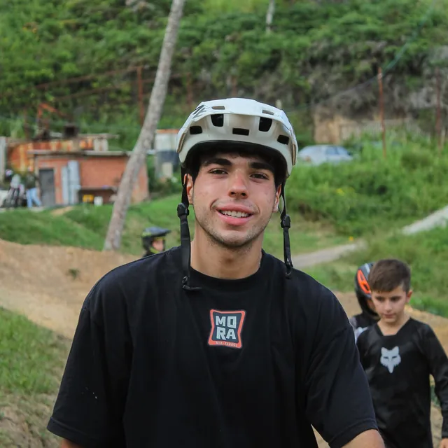

Kako
¡Hola! Soy Kako, profesor de Mora Bike School. Dos ruedas pueden enseñarle a un niño mucho más que pedalear: confianza, valentía y resiliencia. Mi prioridad en cada clase: seguridad absoluta y diversión al máximo. Me caracterizan la paciencia y el vínculo cercano con cada alumno. Mi mayor satisfacción es ver cómo los niños pierden el miedo y terminan cada clase con una sonrisa gigante.